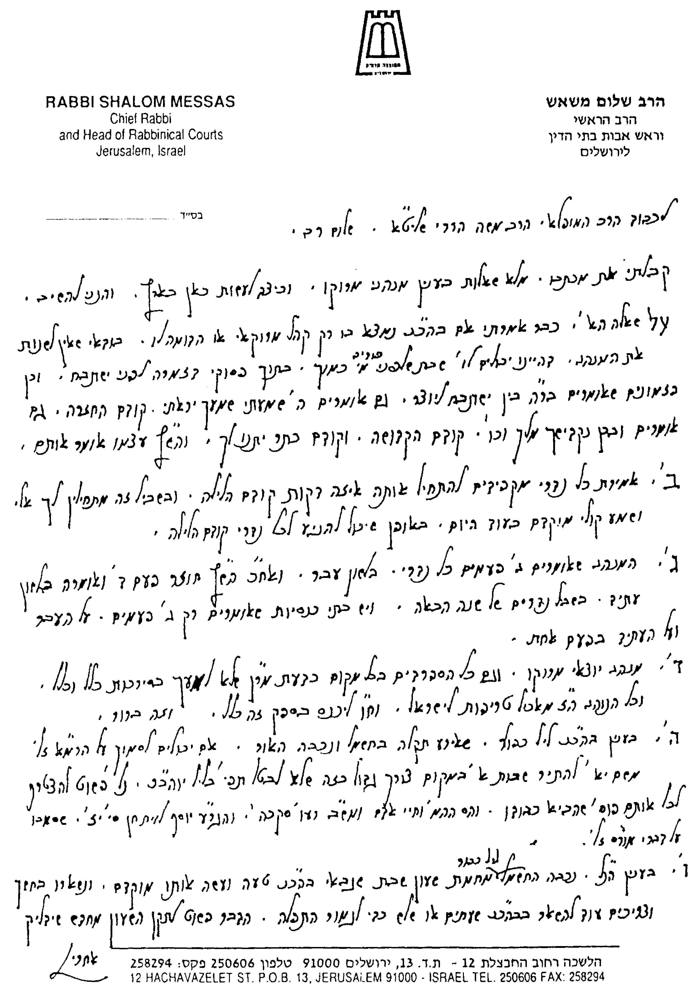
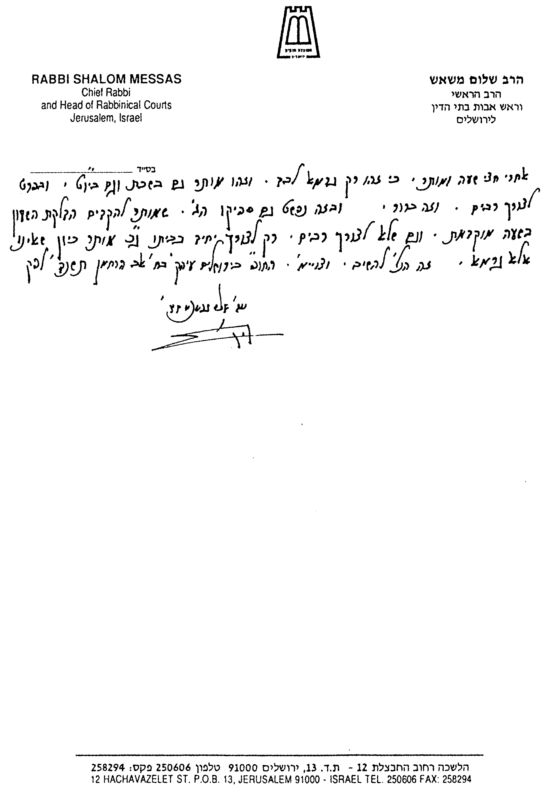

(מתוך ספרנו ספר מקראי קודש - הלכות יום הכיפורים, נספח ה')
בס"ד ט"ז אייר תשנ"ד
לכבוד
הרב הגדול, מעוז ומגדול, סיני ועוקר הרים וטוחנן זב"ז,
הג"ר שלום משאש שליט"א,
ראש אבות בתי הדין והרב הראשי פעיה"ק ירושלים ת"ו.
רצינו לשאול את כת"ר שליט"א כמה שאלות בענין שבת, מועדים ועוד כמה ענינים:
בענין ראש השנה ויום הכיפורים:
א. ראה ראינו שכתב כת"ר בשו"ת שמש ומגן (ח"א סי' מ"א) לחזק מנהג היהודים יוצאי מרוקו לומר פיוטים בפסוקי דזמרה בראש השנה ויוה"כ. ומזה ילפינן שיש ליהודי מרוקו להמשיך במנהגם בשבת שלפני פורים לומר פיוט "מי כמוך" בתפלת "נשמת" לפני "ישתבח". רצינו לשאול, האם כן הדין גם גבי אמירת פיוטים בין "ישתבח" ל"יוצר", דשרי לאומרם כמנהג יוצאי מרוקו בראש השנה. וכן גבי אמירת פיוטים ברה"ש ויוה"כ בין תפילת הלחש לחזרת הש"ץ, ואף בתוך חזרת הש"ץ לפני הקדושה - שיאמרם אף שליח הציבור עצמו. או שמה שהתיר כת"ר הוא דוקא בפסד"ז.
ב. האם יש להקפיד לומר "כל נדרי" דוקא קודם הלילה, וכמש"כ הרמ"א (בסי' תרי"ט סעי' א') שכן המנהג, משום שאין מפירין נדרין בשבת ויו"ט (וכמש"כ הב"ח, והב"ד כה"ח סי' תרי"ט סקכ"ה). או דשרי לומר "כל נדרי" אף לאחר השקיעה וצאת הכוכבים, דקיי"ל דנדרים שהם לצורך היום מתירים אפילו בשויו"ט, וכמש"כ הריב"ש (סס"י שצ"ד) ללמד זכות על הנוהגים לאומרו בלילה, ומה מנהג יהודי מרוקו בזה.
ג. האם מנהג יוצאי מרוקו כמ"ש הטור (בסי' תרי"ט) בריש דבריו, לומר "כל נדרי" בלשון עבר, והיינו הפרת הנדרים של העבר, או דוקא כדעת ר"ת שכתב לומר בנוסח "מיום הכיפורים הזה עד יום הכיפורים הבא עלינו לטובה", והיינו על העתיד. או שמשלבים הם את שתי הנוסחאות, וכמש"כ הרב כנה"ג (בהגה"ט סי' תרי"ט. הב"ד כה"ח סי' תרי"ט סקי"ז). או שנוהגים באופן אחר. וכיצד יש לנהוג כשחלק מהמתפללים הינם יוצאי מרוקו והשאר יוצאי גלויות אחרות, ההולכים לפי הרוב.
בענין שחיטה:
ד. האם מנהג יוצאי מרוקו להחמיר כדברי מרן ביו"ד (סי' ל"ט סעי' י') שאין למען הסירכות ביד, וש"כל הנוהג כן כאילו מאכיל טרפות לישראל". ושכ"כ הגאון העצום רבי עבדאללה סומך זצ"ל בשו"ת זבחי צדק, וכן הראל"צ יש"א ברכה בשו"ת שמחה לאיש (חאו"ח סי' ג'), כה"ח (יו"ד שם ס"ק ר"כ ורכ"א), הגר"ע יוסף (יבי"א ח"ה חיו"ד סי' ג', חלק ו' חאו"ח סי' מ"ג, וחלק יו"ד סי' י"ד סק"ו. ושו"ת יחוה דעת ח"ג סי' נ"ו) ועוד רבים מאחרוני הספרדים. או שמנהג יהודי מרוקו להקל כדעת הרמ"א (שם ביו"ד סעי' י"ג) ולהתיר במשמוש ומיעוך, עפי"ד מהרי"ו והכלבו (שהביא דבריהם בב"י שם). והיינו האם נוהגים הם להקל ולאכול בשר "כשר", או שמחמירים הם כדברי מרן השו"ע שקיבלנו הוראותיו ולאכול דוקא "חלק בית יוסף".
בענין שבת ויום הכיפורים:
ה. לאחר שחזינו וראינו את דברי כת"ר שליט"א בשו"ת תבואות שמש (חאו"ח סי' ג' וד') ובשו"ת שמש ומגן (ח"ב סי' כ"ו ונ"א) בענין שעון שבת, רצינו לשאול:
1) בית כנסת שקרתה תקלה במערכת החשמל וכבה בו החשמל באמצע תפילת ערבית של שבת או של יוה"כ. האם ניתן לסמוך לדינא על דברי בעל העיטור, דס"ל דשבות לצורך מצוה שרי בשבת, ולהתיר על פיו לפחות במקום מצוה דרבים. ולפי"ז מותר לומר לגוי שיתקן את החשמל שהתקלקל, לצורך תפילת הרבים. ושנראה שכן פסקו להקל הרב המגיד והחיי אדם, וכן המשנה ברורה (סי' רע"ו סקכ"ה) והגר"ע יוסף (בלוית חן סי' י"ז). והרמ"א (בסי' רע"ו סעי' ב') התיר זאת בשעת צורך גדול. או שיש להחמיר בזה כדעת הרי"ף, הרמב"ם והרא"ש, ושכ"פ מרן בסי' ש"ז סעי' ה' (שהתיר רק במקום איסור דרבנן). ואם יש לאסור הדבר, האם לפחות שרי בני"ד לומר לגוי שיאמר לגוי אחר לעשות כן (כדעת שו"ת חוות יאיר סי' נ"ג. וראה גם שו"ת חת"ס חאו"ח סי' ס', וחלק חו"מ סי' קפ"ה). או שאף כן יש לאסור (וכמש"כ המ"ב סי' ש"ז סקכ"ד בשם עבה"ג).
2) במקרה הנ"ל, אם כבה החשמל עקב טעות בסידור השעון שבת (ולא בשל תקלה חשמלית), כיון שהגבאי כיוון אותו בטעות שיכבה בשעה מוקדמת מהרצוי. המותר אז ליהודי להקדים את הדלקת החשמל ע"י השעון שבת (שממשיך כמובן לפעול כל הזמן), שבמקום שידלק שוב רק בבוקר, ידלק האור שוב בערב מיד, או לאחר כמה דקות (דהוי גרמא). ואם לאו - המותר לפחות לילד קטן להקדים את הדלקת החשמל לצורך התפילה דרבים, או שגם זה אסור, ורק מותר לומר לגוי שיעשה כן.
3) כנ"ל, המותר להקדים את הדלקת השעון (שממשיך לפעול) אם כבר כבה החשמל, כדי שידלק שוב בשעה מוקדמת, אך לא לצורך רבים אלא רק לצורך יחיד. והאם גם לצורך רשות, ולא לצורך מצוה.
אודה לכת"ר אם יטרח להשיבני מהרה. ושכמ"ה.
משה הררי.
ירושלים

